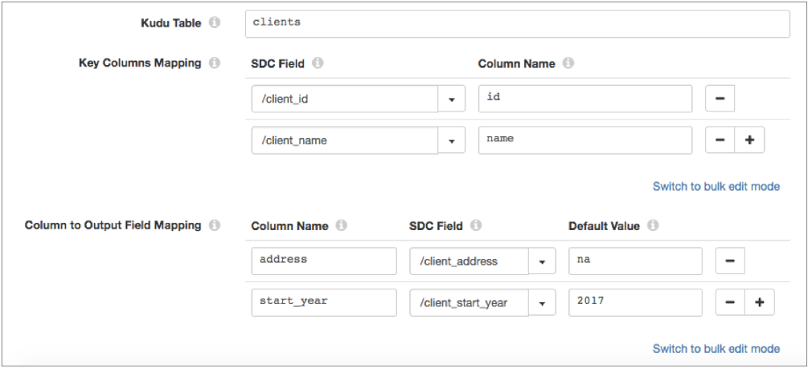

Kudu Lookup
The Kudu Lookup processor performs lookups in a Kudu table and passes the lookup values to fields. Use the Kudu Lookup to enrich records with additional data.
For example, you can configure the processor to use a department_ID field as the primary key column to look up department name values in a Kudu table, and pass the values to a new department_name output field.
When you configure Kudu Lookup, you specify the connection information for one or more Kudu masters and define the table to use. You define the key columns to look up and define the output fields to write the lookup values to.
When a lookup results in multiple matches, the Kudu Lookup processor can return the first matching value or return all matching values in separate records.
To improve pipeline performance, you can configure the Kudu Lookup processor to locally cache the Kudu table information and the lookup values returned from a Kudu table.
Column Mappings
When you configure the Kudu Lookup processor, you define the following column mappings:
- Key Columns Mapping
- Define the incoming fields in the record that map to the primary key column or columns in the Kudu table. The primary key for a Kudu table can be either a simple key consisting of a single column or a compound key consisting of multiple columns. Click the Add icon to add multiple columns for a compound primary key.
- You must add the primary key columns in the Kudu table to the Key Columns Mapping. You can add additional columns that are not primary keys. However, adding non-primary keys to the Key Columns Mapping slows the performance of the lookup.
- Columns to Output Fields Mapping
- Define the columns to look up and the fields in the record to map the column values to. You can optionally define a default value to use when the lookup does not return a value for the field.
For example, the following image shows a Kudu Lookup processor that looks up values in a clients table that has a compound primary key consisting of id and name. The processor maps the incoming client_id and client_name record fields to the primary keys in the table. The processor returns the values of the address and start_year columns, and passes the values to the new client_address and client_start_year output fields in the record:

Kudu Data Types
The Kudu Lookup processor converts Kudu data types to the following compatible Data Collector data types:
| Kudu Data Type | Data Collector Data Type |
|---|---|
| Binary | Byte Array |
| Bool | Boolean |
| Double | Double |
| Float | Float |
| Int8 | Byte |
| Int16 | Short |
| Int32 | Integer |
| Int64 | Long |
| String | String |
| Unixtime_micros | Datetime The Kudu Unixtime_micros data type stores microsecond values. When converting to the Data Collector Datetime data type, the processor divides the field value by 1,000 to convert the value to milliseconds, and then converts the value to Datetime. |
Lookup Cache
To improve pipeline performance, you can configure the Kudu Lookup processor to locally cache Kudu table information and the lookup values returned from a Kudu table.
When you stop the pipeline, the processor clears both caches.
Cache Table Information
By default, the processor locally caches information about each Kudu table to look up, including the table name and schema. You can configure the maximum number of tables that the processor caches information for. When the maximum number is reached, the processor evicts the oldest values from the cache.
Disable the caching of table information only when you expect the Kudu table schemas to change frequently. In this situation, you want the processor to fetch the updated schemas from Kudu, rather than use an outdated schema in the cache.
The following image displays the properties that configure the table cache:

Cache Lookup Values
By default, the processor does not cache the lookup values returned from a Kudu table. To improve pipeline performance, you can enable the processor to locally cache the lookup values.
When enabled, the processor caches values until the cache reaches the maximum size or the expiration time. When the first limit is reached, the processor evicts values from the cache.
- Size-based eviction
- Configure the maximum number of values that the processor caches. When the maximum number is reached, the processor evicts the oldest values from the cache.
- Time-based eviction
- Configure the amount of time that a value can remain in the cache without being written to or accessed. When the expiration time is reached, the processor evicts the value from the cache. The eviction policy determines whether the processor measures the expiration time since the last write of the value or since the last access of the value.
- For example, you set the eviction policy to expire after the last access and set the expiration time to 60 seconds. After the processor does not access a value for 60 seconds, the processor evicts the value from the cache.
The following image displays the properties that configure the lookup value cache:

Configuring a Kudu Lookup
Configure a Kudu Lookup processor to perform lookups in Kudu.
-
In the Properties panel, on the General tab, configure the
following properties:
General Property Description Name Stage name. Description Optional description. Stage Library Library version that you want to use. Required Fields 
Fields that must include data for the record to be passed into the stage. Tip: You might include fields that the stage uses.Records that do not include all required fields are processed based on the error handling configured for the pipeline.
Preconditions Conditions that must evaluate to TRUE to allow a record to enter the stage for processing. Click Add to create additional preconditions. Records that do not meet all preconditions are processed based on the error handling configured for the stage.
On Record Error Error record handling for the stage: - Discard - Discards the record.
- Send to Error - Sends the record to the pipeline for error handling.
- Stop Pipeline - Stops the pipeline. Not valid for cluster pipelines.
-
On the Kudu tab, configure the following
properties:
Kudu Property Description Kudu Masters Comma-separated list of connection information for the Kudu masters to use. Use the following format: <host>:<port>
Kudu Table Table to look up. Enter one of the following: - Name of an existing Kudu table. If the table doesn't exist, the pipeline fails to start.
- Expression that evaluates to the name of an existing Kudu table. For example, if the
table name is stored in the "tableName" record attribute, enter the following
expression:
${record:attribute('tableName')}If the table doesn't exist, the records are treated as error records.
Note: Impala creates Kudu tables with the following naming convention:impala:<database name>.<table name>
When using a table created by Impala, be sure to use the entire table name.
Key Columns Mapping 
Map the incoming fields in the record to the primary key column or columns in the Kudu table. Enter the following: - SDC Field - Name of the existing field or fields in the record that contain the primary key column or column values.
- Column - Name of the primary key column or columns in the Kudu table.
The primary key for a Kudu table can be either a simple key consisting of a single column or a compound key consisting of multiple columns. Using simple or bulk edit mode, click the Add icon to add multiple columns for a compound primary key.
Columns to Output Fields Mapping Map the columns to look up in the Kudu table to the output fields in the record. Enter the following: - Column Name - Name of the Kudu column that contains the lookup value. Enter a column name or enter an expression that defines the column name.
- SDC Field - Name of the field in the record that receives the lookup value. You can specify an existing field or a new field. If the field does not exist, Kudu Lookup creates the field.
- Default Value - Optional default value to use when
the lookup does not return a value for the field and
Ignore Missing Value is selected.
If Ignore Missing Value is cleared, the processor sends the record to error when a lookup returns no value - even if you define a default value.
Using simple or bulk edit mode, click the Add icon to create additional field mappings.
Case Sensitive Enables case-sensitive column names. Select when the Kudu column names use mixed case. Clear when the Kudu column names use lower case. Ignore Missing Value Determines whether the processor ignores missing lookup values. When cleared, the processor sends the record to error if a lookup returns no value.
When selected, the processor continues to process the record if a lookup returns no value and the Columns to Output Fields Mapping defines a default value. The processor sends the record to error if the Columns to Output Fields Mapping does not define a default value.
-
On the Lookup tab, configure the following
properties:
Lookup Property Description Cache Kudu Table Specifies whether to locally cache the name and schema of the Kudu tables to look up. Maximum Entries to Cache Table Objects Maximum number of table entries to cache. When the maximum number is reached, the processor evicts the oldest values from the cache. Default is -1, which means unlimited.
Enable Local Caching Specifies whether to locally cache the returned values. Maximum Entries to Cache Maximum number of values to cache. When the maximum number is reached, the processor evicts the oldest values from the cache. Default is -1, which means unlimited.
Eviction Policy Type Policy used to evict values from the local cache when the expiration time has passed: - Expire After Last Access - Measures the expiration time since the value was last accessed by a read or a write.
- Expire After Last Write - Measures the expiration time since the value was created, or since the value was last replaced.
Expiration Time Amount of time that a value can remain in the local cache without being accessed or written to. Default is 1 second.
Time Unit Unit of time for the expiration time. Default is seconds.